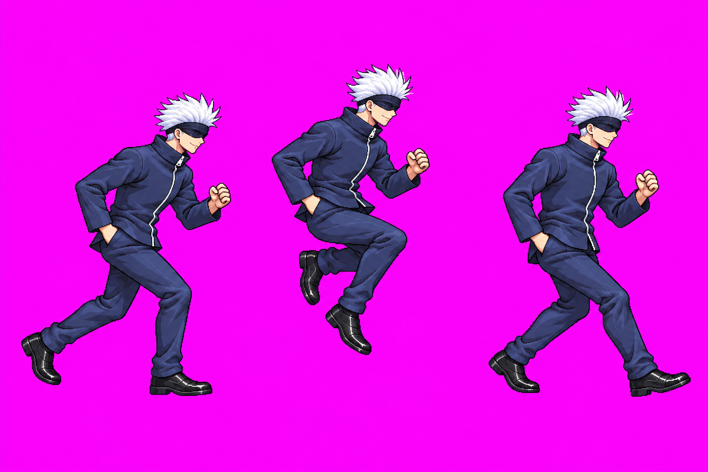

Branch preview for Claude’s technical review. These images are not user-approved.
Packed atlas: backDash v07 is included and passed the packer scale gate after a documented uniform auto-head fit. Dash v10 and superDash v12 remain in raw/_qa_hold/; the atlas therefore uses approved dash v06 and superDash v09. Claude owns any frame offsets/calibration and the next review step.
Dash v10 — technical hold
All 3 calls used. Attempt 3 corrected the oversized head but the packer’s auto-head fit clipped frame 1 by 12 px. Preserved in QA hold; not in the packed atlas. Attempt 2 is also preserved there with head/hair drift (1.07 of idle).
2 of 3 calls used; first call output path was not captured and is disclosed in the attempt inventory. Source SHA256: E8287F029E9E25E7284B611D4002A492D79F886FC6B489A5DEA3CE4AC5604934. Auto-head fit x0.8569 corrected the uniform scale finding; packed cells are shown below.

Loading packed atlas cells…
SuperDash v12 — technical hold
All 3 calls used. Attempt 3 is preserved in QA hold; packed probe read head 0.91 and feet 0.79 of idle, with frame 1 still 4 px beyond the right cell edge. The atlas keeps approved superDash v09.